#eternal_starlight:crystallized_moth_food
物品标签 · 45 个已收录成员
标签成员 (45)
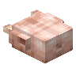
生火鸡肉autumnity:turkey生火鸡肉块
autumnity:turkey_piece
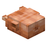
熟火鸡肉autumnity:cooked_turkey熟火鸡肉块
autumnity:cooked_turkey_piece
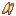
蟹肉ecologics:crab_meat生鸭肉
environmental:duck熟鸭肉
environmental:cooked_duck生鹿排
environmental:venison
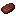
熟鹿排environmental:cooked_venison
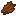
腐肉干eternal_starlight:rotten_flesh_jerky高塔乌贼
eternal_starlight:rookfish熟高塔乌贼
eternal_starlight:cooked_rookfish
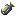
光鲀eternal_starlight:luminofish
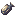
熟光鲀eternal_starlight:cooked_luminofish光角食人鱼
eternal_starlight:luminaris熟光角食人鱼
eternal_starlight:cooked_luminaris极光鹿肉排
eternal_starlight:aurora_deer_steak熟极光鹿肉排
eternal_starlight:cooked_aurora_deer_steak硕鼠兽肉
eternal_starlight:ratlin_meat熟硕鼠兽肉
eternal_starlight:cooked_ratlin_meat黯影蜗牛肉
eternal_starlight:shadow_snail_meat熟黯影蜗牛肉
eternal_starlight:cooked_shadow_snail_meat
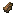
魔窟腐肉eternal_starlight:doomeden_carrion生薄荷肉排
neapolitan:mint_chops熟薄荷肉排
neapolitan:cooked_mint_chops生远古兽肉
wan_ancient_beasts:raw_ancient_meat
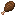
熟远古兽肉wan_ancient_beasts:cooked_ancient_meat
 生牛肉
生牛肉minecraft:beef
 生鸡肉
生鸡肉minecraft:chicken
 牛排
牛排minecraft:cooked_beef熟鸡肉
minecraft:cooked_chicken
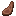
熟羊肉minecraft:cooked_mutton
 熟猪排
熟猪排minecraft:cooked_porkchop熟兔肉
minecraft:cooked_rabbit
 生羊肉
生羊肉minecraft:mutton
 生猪排
生猪排minecraft:porkchop生兔肉
minecraft:rabbit
 腐肉
腐肉minecraft:rotten_flesh
 鸡肉块
鸡肉块farm_and_charm:chicken_parts
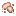
生切制小肉kaleidoscope_cookery:raw_cut_small_meats生羊排
kaleidoscope_cookery:raw_lamb_chops
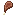
熟羊排kaleidoscope_cookery:cooked_lamb_chops
 培根
培根farm_and_charm:bacon生五花肉
kaleidoscope_cookery:raw_pork_belly
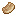
熟五花肉kaleidoscope_cookery:cooked_pork_belly
使用该标签的配方
无